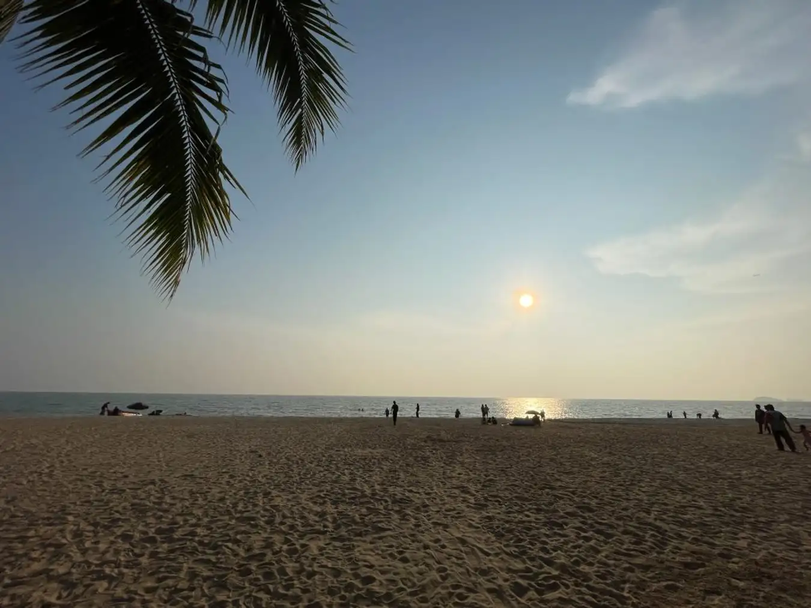
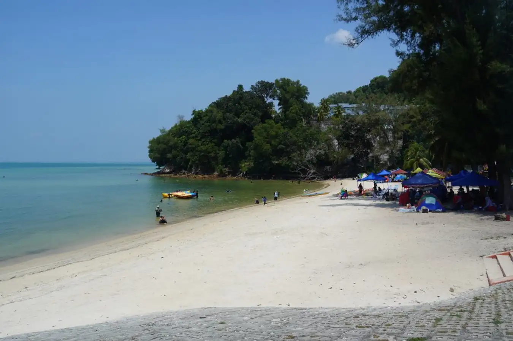
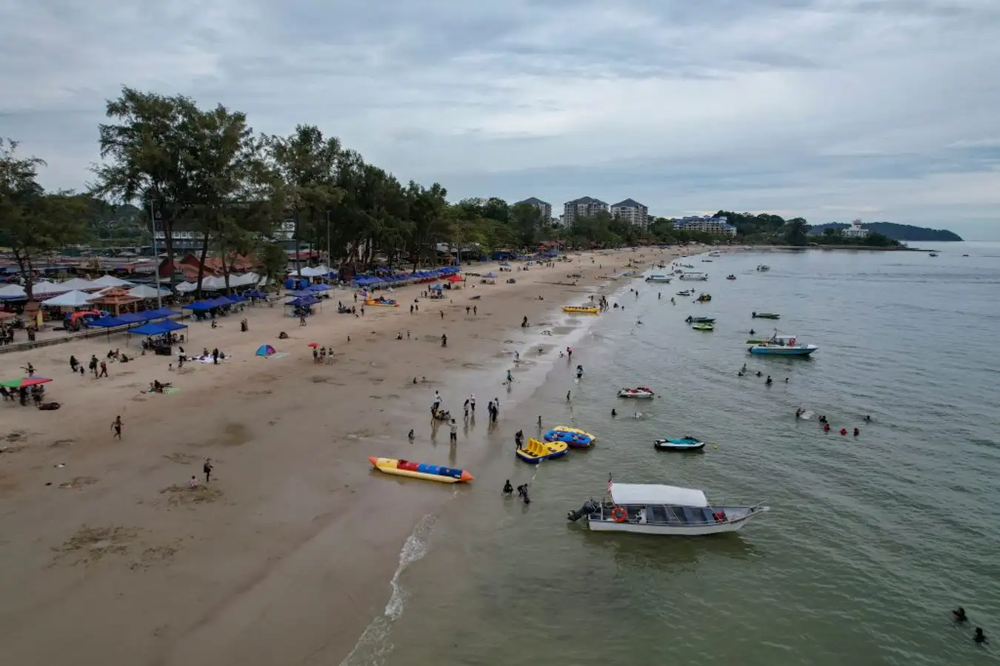

Port Dickson Beaches
Tour Detail
Location:Port Dickson Beaches, Negeri Sembilan
Operation Time: Open all day
Operation Time: Open all day
Description
Port Dickson, often referred to as PD, is a coastal town in Negeri Sembilan, Malaysia, renowned for its pristine beaches and laid-back atmosphere. Situated along the west coast of Peninsular Malaysia, Port Dickson is a popular weekend getaway destination for both locals and tourists seeking sun, sand, and sea.The beaches of Port Dickson boast soft, golden sands, gently lapping waves, and clear azure waters, making them ideal for various recreational activities and relaxation. Whether you're looking to swim, sunbathe, indulge in water sports, or simply unwind with a leisurely stroll along the shore, Port Dickson's beaches offer something for everyone.
Among the most famous beaches in Port Dickson are:
1.Teluk Kemang Beach: This expansive beach is one of the most visited in Port Dickson, featuring a wide stretch of sand lined with shady casuarina trees. It offers excellent facilities such as picnic areas, food stalls, and water sports equipment rentals.
2.Blue Lagoon Beach: Nestled in a picturesque cove surrounded by lush greenery, Blue Lagoon Beach is known for its tranquil waters and stunning natural beauty. It's a favorite spot for swimming, snorkeling, and enjoying peaceful moments by the sea.
3.Pantai Saujana Beach: Located near the Cape Rachado lighthouse, Pantai Saujana Beach is relatively secluded, offering a serene ambiance and breathtaking views of the coastline. It's an ideal destination for those seeking solitude and relaxation away from the crowds.
4.Pantai Cahaya Negeri (State Beach): Also known as the Beach of Light, Pantai Cahaya Negeri is a family-friendly beach with shallow waters, perfect for swimming and building sandcastles. It features playgrounds, barbecue pits, and shaded picnic areas, making it a popular choice for day trips.
5.Pantai Bagan Pinang: This beach is known for its scenic beauty and vibrant atmosphere, with numerous seafood restaurants lining the shore. Visitors can enjoy delicious local cuisine while soaking in the sea breeze and panoramic views of the coastline.
Gallery


